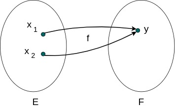

Dans une catégorie, les flèches sont aussi appelées des morphismes.
Dans la catégorie des ensembles
Dans la catégorie des ensembles
Set, les morphismes sont les fonctions qui nous sont familières.
Isomorphismes
Lorsqu'on a une fonction, le plus pratique et le plus simple à manipuler, c'est lorsqu'on a un mapping 1 - 1 entre les éléments de l'ensemble de départ et les éléments de l'ensemble d'arrivée.
Bijection
Ce type de fonction s'appelle une bijection, on dit que la fonction est bijective.Pour chaque élément transformé par la fonction, on peut sans ambiguîté revenir à l'élément de départ ; on peut donc définir une fonction inverse.
 Si on a une fonction
Si on a une fonction f, la fonction inverse est notée f-1
f(x) = y
f-1(y) = x
Le mapping 1 - 1 d'une bijection est exprimé par
f-1(f(x)) = x, ou encore f-1 o f(x) = x
f(f-1(y)) = y, ou encore f o f-1(y) = y
Isomorphisme
Dans une catégorie, cette propriété s'exprimeUne fonction peut ne pas être bijective soit parce qu'elle est injective, soit parce qu'elle est surjective.
Injections, Monomorphismes
Si l'image de 2 éléments distinctsx1 et x2 ont la même image y, on ne peut pas revenir en arrière. Depuis y, on est incapable de choisir entre x1 et x2.

Dans ce cas, on dit que f n'est PAS injective.
Pour qu'une fonction soit une injection on doit avoir
Pour tout
x1 et x2 appartenant à E,
f(x1) = f(x2) entraîne x1 = x2